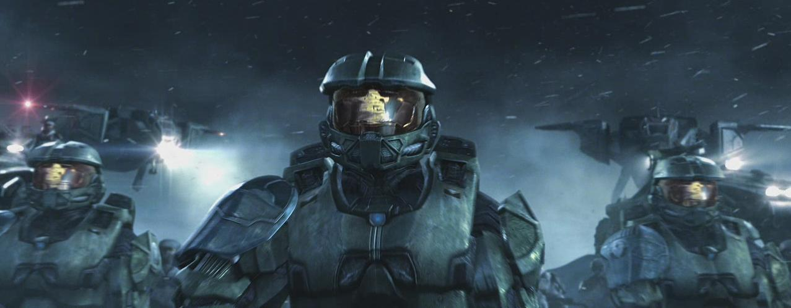
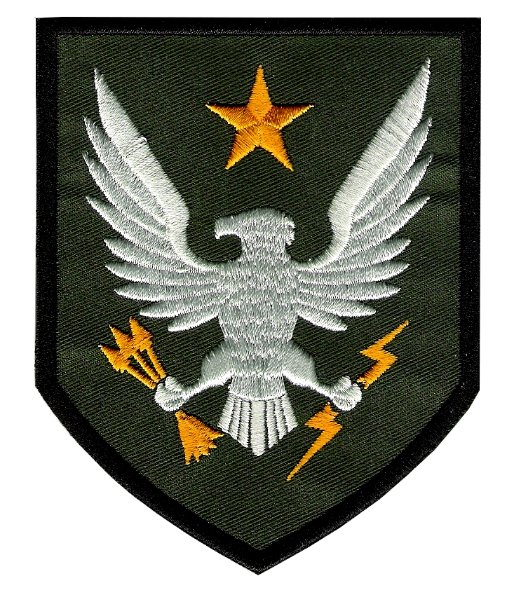

Spartaner Programm
Nach der groß angelegten Kollonalisierung folgten die Kollonial-Kriege. Die Erded war sehr verzweifelt und das ONI hat in einer nicht genehmigeten Mission 6 Jährige Kinder entführt. Diese Kinder wurden dann zu super Soldaten ausgebildet. Jeder Spartaner kann mit allen UNSC Waffen und Fahrzeugen umgehe sowie begrenzt mit Alien Technologie. An den Kindern wurden Genetische veränderungen vorgenommen. In diesem fall haben wir eienen halbwegs ausgewachsenen Spartaner der Generation 7. Jeder Spartaner besitzt eine eigene Mojnir Rüstung mit Schildgeneratoren.


Quellen und weiter Informationen
SPARTAN-II, Halo wikia